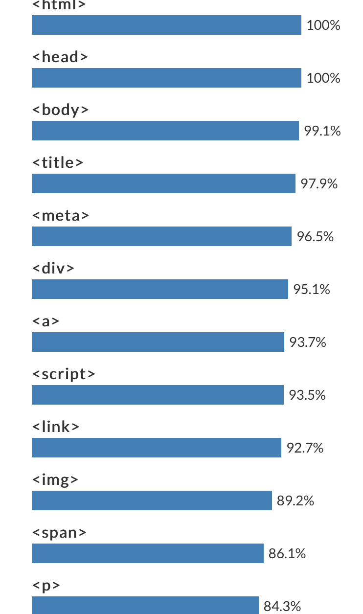

html 첫단계
- ! doctype html 페이지 첫번째 적어야 함
- html 모두의 고위직,위쪽과 아랫쪽 감싸야 함
- head 타이틀 감싸야함
- title 웹페이지 제목,타이틀
- meta charset="utf-8" utf-8 로 문서를 읽는다
자주사용하는 코딩
strong 찐한 글씨체 u 밑줄
br 줄바꿈 ,여러번가능 /br 닫을필요없음
p 정해져있는 여백만큼만 단락나눔
h1 글씨체 크기 h1~h6 까지만 사용할수있음,단락도 나눠줌.
li 목록역할함 ul li 부모인ul 항상 li 위에 따라다님
ul - ol 변경시 목록 숫자표시할때 사용
body title 아래로 항상 본문은 꼭 묶어놓아야함

그림 응용방법
- img src="" ("파일위치이름" ) width="" ("파일크기")
- a href="싸이트주소" /a 링크걸기 방법 (기존창에서 링크로 넘어 )
- a href="싸이트주소" target="_blank" (새창열고싶을때 target추가 )
- a hrer="싸이트주소" target="_blank" title="단어" (링크를 클릭하기전 먼저 알려주고싶을때 추가)
저작권 구애받지 않는 이미지
https://unsplash.com/
web server
https://github.com/
- sign in
- Repositories- new
- name / Create repository
- uploading an existing.file
- choose your files- file-(index)-open
- settings - GitHub Pages-check-Source-None-main-Save
- 홈페이지-index.html
온라인 채팅하는방법